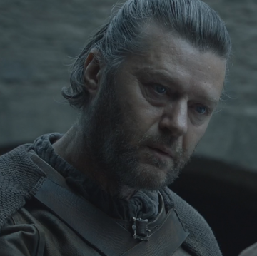
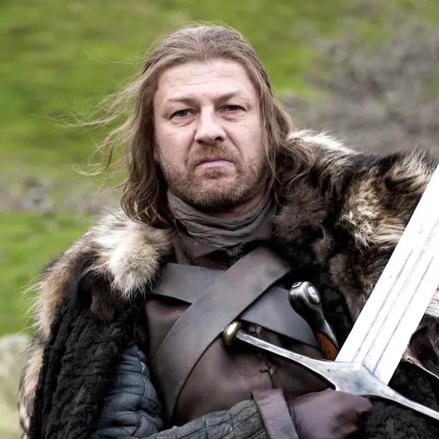
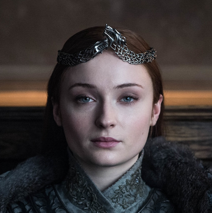
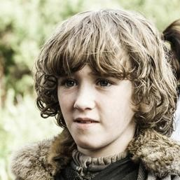

GoTidien
L'actu 100% Game of Thrones, quotidiennement!


L'actu 100% Game of Thrones, quotidiennement!
| IMAGE | PRENOM ET NOM | NAISSANCE | LIENS DE PARENTES | TITRES | MORT |
|---|---|---|---|---|---|
|  | Rickard Stark | / | Père ou grand-père des membres de la famille Stark |
Seigneur de Winterfell Gouverneur du Nord |
- an 282 - Brûlé vif |
|  | Eddard Stark | - an 263 - | Fils de Rickard Stark Frère de Lyanna Stark |
Seigneur de Winterfell Gouverneur du Nord Protecteur du Royaume |
- an 298 - Décapité |
| Lyanna Stark | / | Fille de Rickard Stark Soeur d'Eddard Stark |
Princesse | - 16 ans - En accouchant |
|
| Jon Snow | - an 281 - | Fils de Lyanna Stark et Rhaegar Targaryen | Gouverneur puis Roi du Nord (avant) Lord Commandant de la Garde de Nuit |
NON | |
| Arya Stark | - an 287 - | Fille d'Eddard Stark Soeur de Sansa, Brandon et Rickon Stark |
Princesse (avant) | NON | |
|  | Sansa Stark | - an 285 - | Fille d'Eddard Stark Soeur d'Arya, Brandon et Rickon Stark |
Princesse (avant) Lady de Winterfell Reine du Nord |
NON |
| Brandon Stark | - an 288 - | Fils d'Eddard Stark Frère d'Arya, Sansa et Rickon Stark |
Prince (avant) Seigneur de Winterfell (avant) Roi des Andals et des Premiers Hommes |
NON | |
|  | Rickon Stark | - an 292 - | Fils d'Eddard Stark Frère d'Arya, Sansa et Brandon Stark |
Prince | - 11 ans - Tué par une flèche |